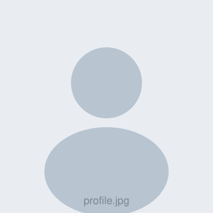
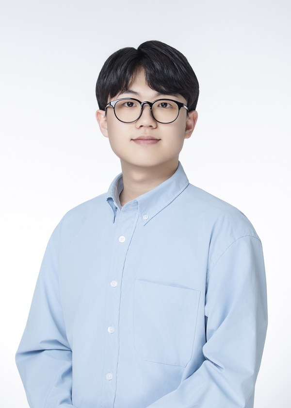
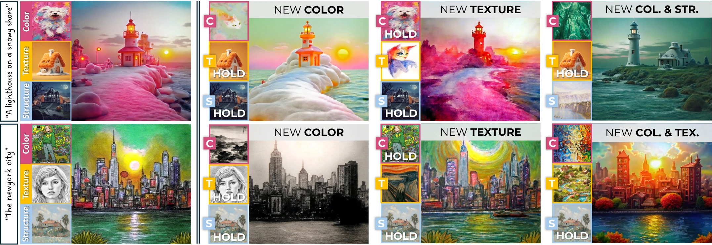
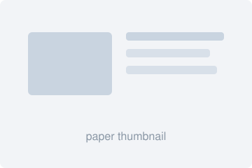
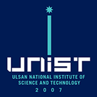
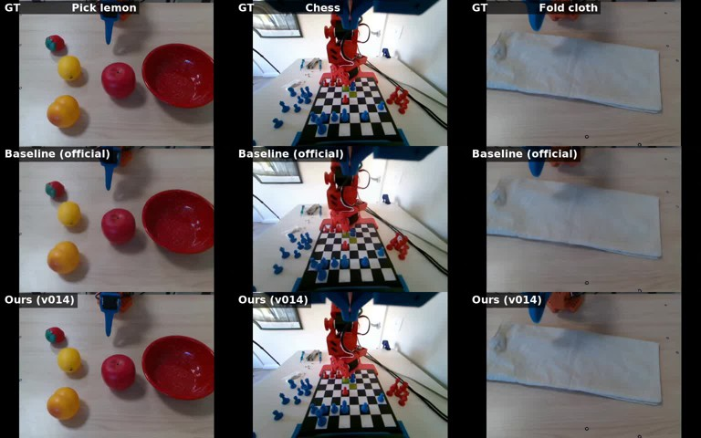
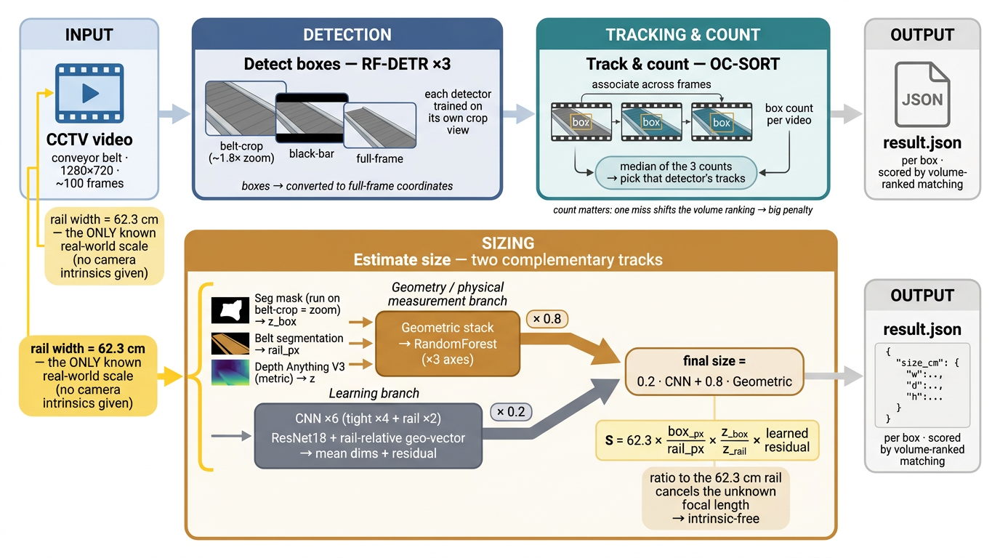
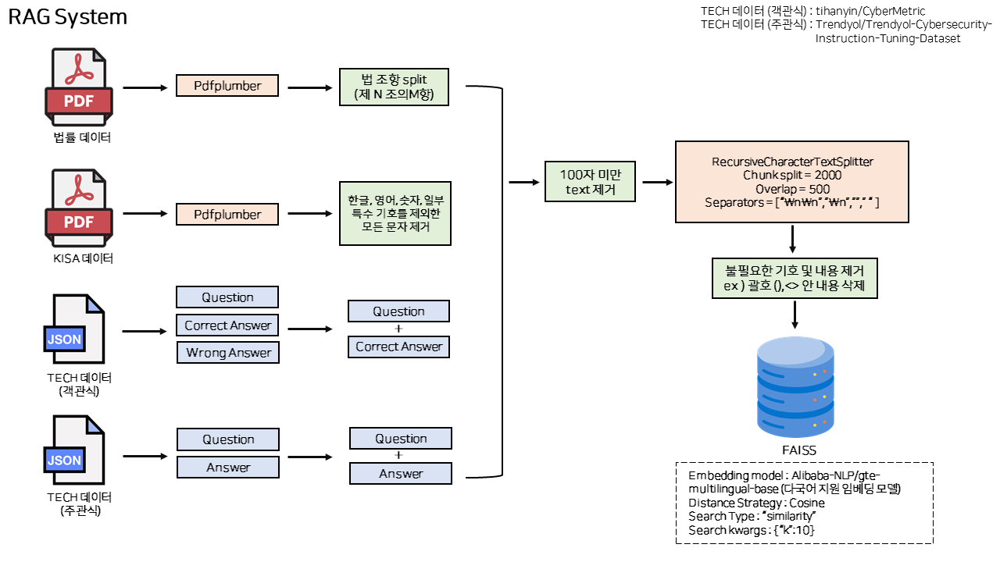

Multisensory Intelligence Lab · UNIST Sep 2026 – Present
Undergraduate Researcher (Advisor: Prof. Arda Senocak)
Multisensory intelligence and multimodal learning.
I am an undergraduate student studying Information and Communication Engineering at Inha University and an undergraduate researcher at the Multisensory Intelligence Lab at UNIST.
My research focuses on world models, diffusion models, and representation learning.



Compose color, texture, and spatial structure from separate style references, with independent control and no training.

Improve compositional image generation with LLM-generated layouts and an object-centric VLM judge at inference time.

Multisensory intelligence and multimodal learning.
VLM-based manufacturing defect inspection with data refinement and supervised fine-tuning.
Diffusion models and generative AI.
Computer vision training; ranked first in two competitions.


Parcel counting and size estimation from conveyor-belt CCTV, combining detection, tracking, and depth.

PDF understanding and retrieval-augmented question answering over formulas, tables, and figures.
Medical X-ray segmentation with UNet++ and soft ensembling; ranked first of 23 teams.
Waste detection with augmentation and model ensembling; ranked first of 24 teams.